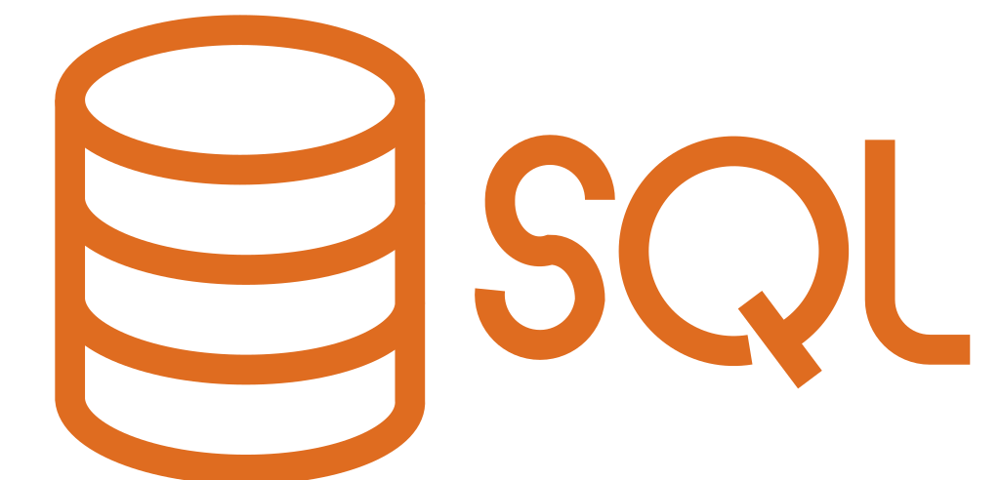

SQL
1. 基礎查詢
SQL（Structured Query Language）是用來和「關聯式資料庫」溝通的語言，幾乎所有主流資料庫（MySQL、PostgreSQL、SQLite、SQL Server）都支援它。SQL的指令分為幾大類：DQL（查詢）、DML（資料操作）、DDL（結構定義），本節先從最常用的查詢開始。
最基本的查詢語法是SELECT ... FROM ...，意思是「從哪張表取出哪些欄位」。例如：SELECT name, age FROM students; 就是從students表取出name和age兩欄。如果要取全部欄位，用*代替，例如：SELECT * FROM students;，但實務上不建議濫用 *，因為會拉回不必要的欄位，拖慢效能。
想要去除重複的結果，可以在SELECT後加上DISTINCT，例如：SELECT DISTINCT city FROM students; 就只會列出不重複的城市名稱。
也可以在SELECT裡做「運算或組合」，例如：SELECT name, age * 12 AS age_in_months FROM students;，AS是幫欄位取別名（Alias），讓結果更好讀。字串也可以用CONCAT()串接，例如：SELECT CONCAT(first_name, ' ', last_name) AS full_name FROM students;。
SQL語法不區分大小寫，但業界慣例是關鍵字全大寫、表名和欄位名小寫，這樣更容易一眼區分，養成好習慣！每一句SQL結尾要加分號（;）。
2. 條件篩選
光是SELECT全部資料通常不夠用，大多數時候我們只想要符合特定條件的資料，這時就用WHERE子句。語法是：SELECT 欄位 FROM 表 WHERE 條件;，例如：SELECT * FROM students WHERE age > 18;。
WHERE裡可以用各種比較運算子：=（等於）、!= 或 <>（不等於）、>、<、>=、<=。多個條件可以用AND（且）、OR（或）、NOT（否）串接，例如：WHERE age >= 18 AND city = '台北';。
篩選範圍可以用BETWEEN ... AND ...，例如：WHERE age BETWEEN 18 AND 25; 等同於 age >= 18 AND age <= 25。篩選是否在某個清單內，用IN，例如：WHERE city IN ('台北', '台中', '高雄');，比寫一堆OR優雅很多！
字串的模糊比對用LIKE，搭配兩個萬用字元：%代表任意多個字元，_代表剛好一個字元。例如：WHERE name LIKE '陳%'; 找所有姓陳的；WHERE name LIKE '%志_'; 找名字中有「志」且後面只有一個字的。
最後，判斷欄位是否為空值要用IS NULL或IS NOT NULL，不能用 = NULL，這是初學者超常犯的錯誤！例如：WHERE email IS NULL; 找出沒有填email的學生。
3. 排序與限制
查詢結果預設沒有固定順序，要讓結果排序就用ORDER BY。語法是：ORDER BY 欄位 ASC（升冪，預設）或 DESC（降冪）。例如：SELECT * FROM students ORDER BY score DESC; 讓分數最高的排第一。
也可以同時對多個欄位排序，用逗號分開，例如：ORDER BY city ASC, score DESC; 先按城市升冪排，城市相同的再按分數降冪排。ORDER BY一定要放在WHERE之後。
如果只想要前幾筆結果，用LIMIT（MySQL/SQLite語法），例如：SELECT * FROM students ORDER BY score DESC LIMIT 10; 取出分數前十名，超常用！SQL Server是用TOP，Oracle是用ROWNUM，語法略有不同。
搭配OFFSET可以做「分頁」，例如：LIMIT 10 OFFSET 20; 跳過前20筆、取接下來10筆，這就是第3頁（每頁10筆）的資料，網頁的分頁功能幾乎都是這樣實作的！
完整的SQL語句執行順序要記清楚：FROM → WHERE → GROUP BY → HAVING → SELECT → ORDER BY → LIMIT，雖然我們寫的順序是SELECT在前，但資料庫實際執行時FROM和WHERE是最先處理的，理解這個順序能幫助你寫出更正確的查詢！
4. 聚合與分組
「聚合函式（Aggregate Functions）」可以對一群資料做統計計算，常用的有：COUNT()（計算筆數）、SUM()（加總）、AVG()（平均）、MAX()（最大值）、MIN()（最小值），例如：SELECT AVG(score), MAX(score), COUNT(*) FROM students;。
COUNT(*)計算所有列數，COUNT(欄位)則不計算NULL值，這個差異很重要！例如：SELECT COUNT(*) FROM students; 算所有學生數，SELECT COUNT(email) FROM students; 只算有填email的學生數。
聚合函式通常搭配GROUP BY使用，讓資料依某欄位分組後再各自計算。例如：SELECT city, AVG(score) FROM students GROUP BY city; 就能算出每個城市的平均分數，非常實用！GROUP BY後面放的欄位通常也要出現在SELECT裡。
WHERE是篩選原始資料列，但如果要篩選分組後的結果，要用HAVING，例如：SELECT city, COUNT(*) AS total FROM students GROUP BY city HAVING total > 50; 只列出學生數超過50人的城市。WHERE和HAVING的差別是：WHERE先過濾再分組，HAVING分組後再過濾。
5. 多表與異動
真實資料庫通常有很多張表，要把相關資料合在一起查，就要用JOIN。最常用的是INNER JOIN（內連接），只回傳兩張表都有對應資料的列，語法是：SELECT s.name, c.course_name FROM students s INNER JOIN courses c ON s.course_id = c.id;，ON後面指定兩表的關聯條件。
另外還有LEFT JOIN（左連接），保留左表所有列，右表沒有對應的就填NULL；RIGHT JOIN則相反，保留右表所有列。例如：SELECT s.name, c.course_name FROM students s LEFT JOIN courses c ON s.course_id = c.id; 就算學生沒有選課，也還是會列出來（course_name那欄顯示NULL）。
資料的「異動（DML）」有三個核心指令：INSERT INTO新增資料，語法是：INSERT INTO students (name, age) VALUES ('小明', 18);。UPDATE修改資料：UPDATE students SET age = 19 WHERE name = '小明';，千萬記得加WHERE，不然會改到全部！
DELETE FROM刪除資料：DELETE FROM students WHERE name = '小明';，同樣一定要加WHERE，否則整張表的資料都會被清空，這是學SQL最容易出悲劇的地方，要非常小心！
最後補充「DDL」的基礎：CREATE TABLE建立新表格（定義欄位名稱和型態）、ALTER TABLE修改表格結構（新增/刪除欄位）、DROP TABLE刪除整張表（連資料都消失！）。掌握這些，你已經具備了操作關聯式資料庫的基本能力！
📄 最後這裡提供一個用GoogleAI(Gemini)NotebookLM製作的教學綱要簡報簡報，下載起來，方便需要時做迅速的統整和複習~
立即下載檔案